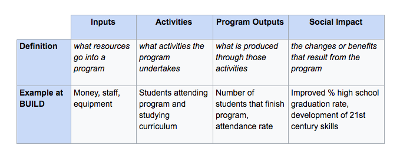
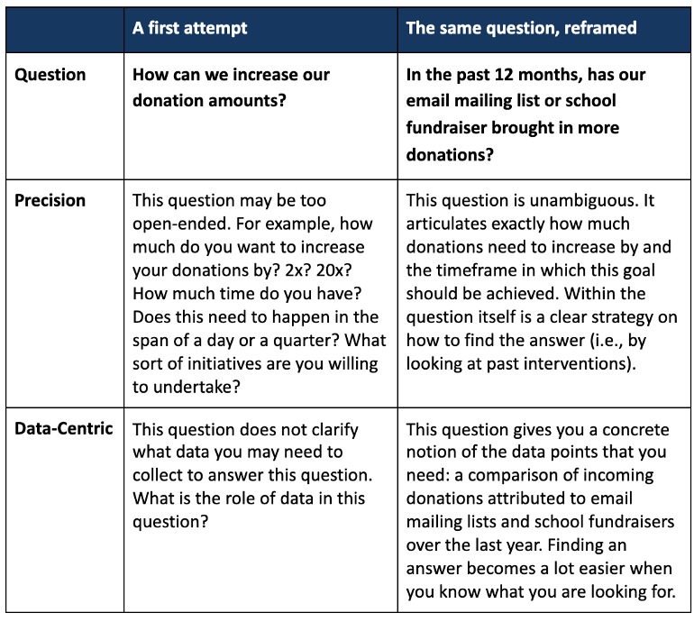
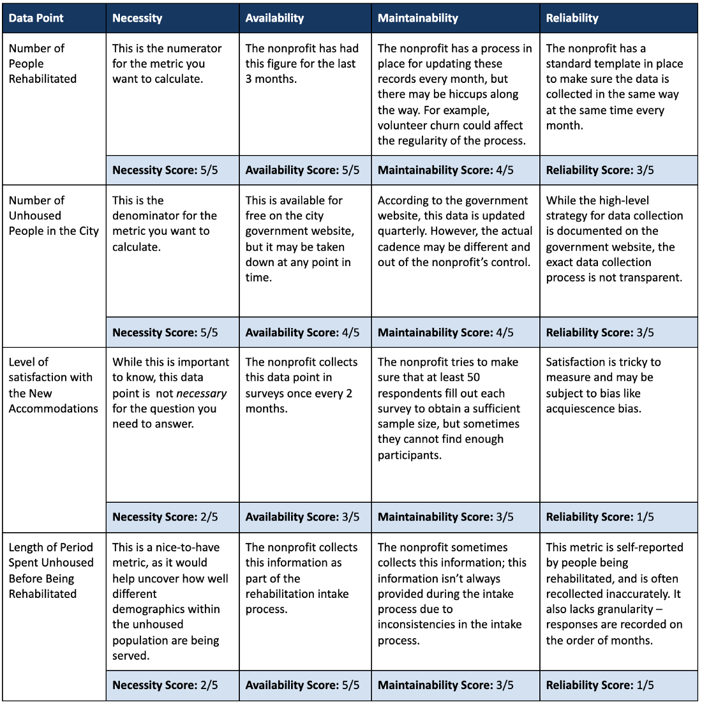
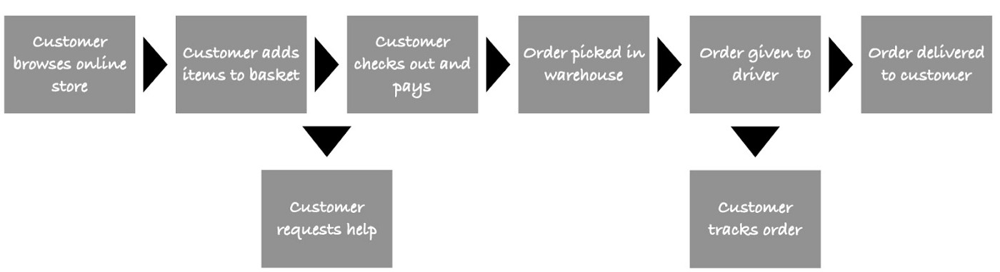
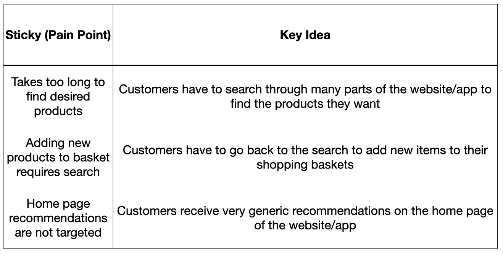
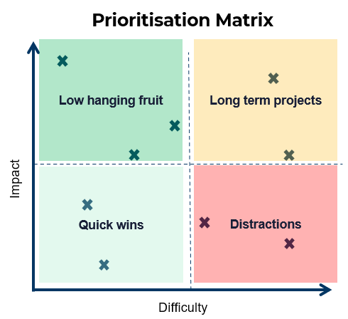
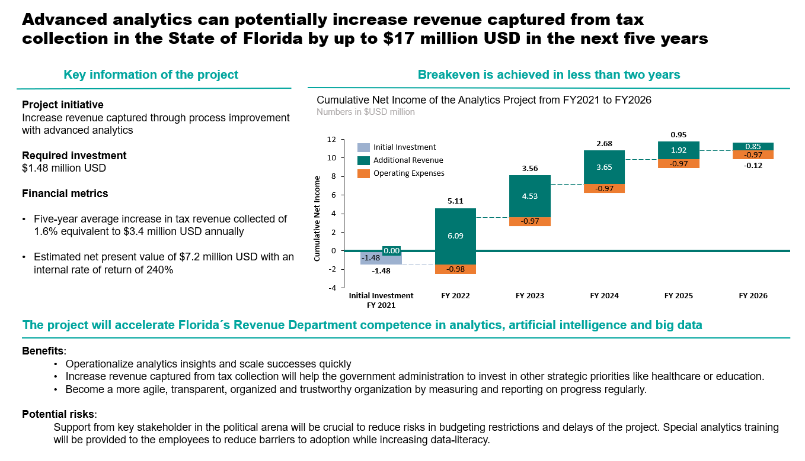
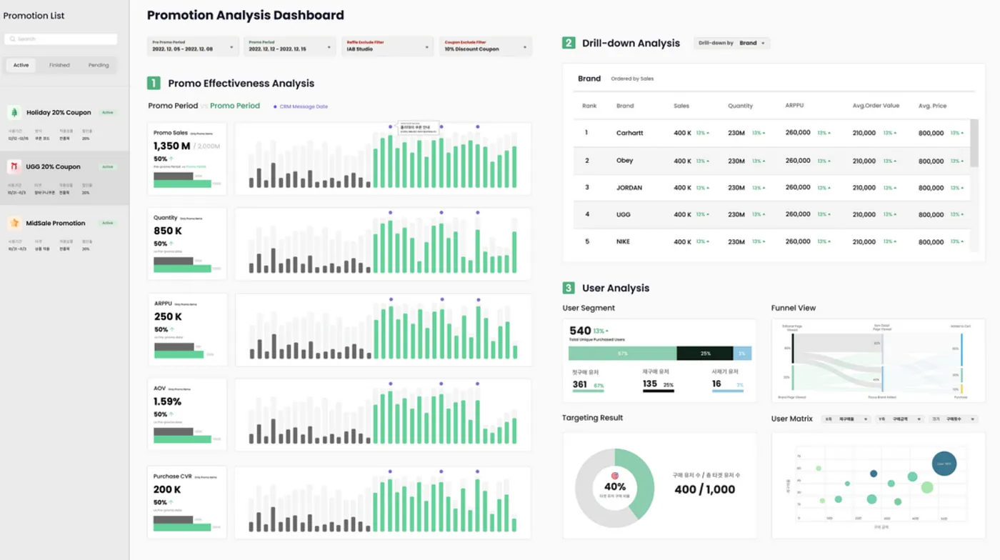
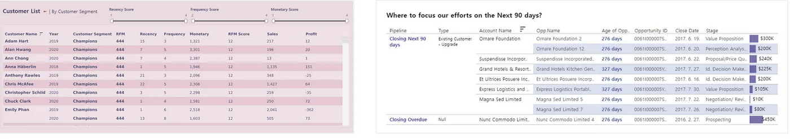

Planning
Misc
- Also See
- Logistics, Demand Planning >> Article Notes >> Case Study: Automating Stock Replenishment
- A detailed article on the execution of a data science project within a manufacturing company, but can be generalized to other industries.
- Goes through a scenario of step-by-step planning and execution of changing a manual stock replenishment process to an automated one
- Logistics, Demand Planning >> Article Notes >> Case Study: Automating Stock Replenishment
- Recommendations to Increase Success Rates (source)
- Ensure technical staff understand the project purpose and business context.
- To avoid misunderstandings and miscommunications about intent and purpose, ongoing dialogue between business and technical teams, as well as efforts to build shared understanding and vocabulary are required.
- Choose enduring problems
- Before starting a major data project, leaders should be prepared to commit each product team to solving a specific problem for at least a year.
- This recommendation pushes back against the tendency to chase quick wins or constantly shift priorities. By focusing on long-term, high-impact problems, organizations can give their data initiatives the time and resources they need to succeed.
- Focus on the problem, not the technology.
- Select the right tool for the job, even if it’s not the most cutting-edge solution. This may require changes in how organizations evaluate and reward their technical teams.
- Invest in infrastructure.
- Up-front investments in infrastructure to support data governance and model deployment can substantially reduce the time required to complete data projects.
- This includes building robust data pipelines, implementing version control for models and data, and developing systems for monitoring and maintaining deployed solutions.
- Understand limitations.
- Data Science is not a magic wand that can make any challenging problem disappear; in some cases, even the most advanced models cannot automate away a difficult task.
- Temper stakeholder expectations and focus on areas where DS can truly add value.
- Ensure technical staff understand the project purpose and business context.
- DL model cost calculator (github) (article)
- “Last Mile” problem: The transition from successful prototypes to production-ready systems
- Often derails promising projects, as teams discover that their models don’t perform well in real-world conditions or can’t handle the scale of production data.
- A clearly defined business problem and targeted success metrics that’s agreed upon by data scientists and stakeholders are essential before starting a project.
- It should be measurable, clear, and actionable.
- Use the “Challenge Framework” to solve difficult problems
- Every situation is a function of:
- Incentives
- Personalities
- Perspectives
- Constraints
- Resources
- In most “tough” situations, 2+ are misaligned. Figure out which and hone in on them.
- Every situation is a function of:
- Bum, Buy, then Build
- Bum free solutions while also relaxing quality thresholds.
- Look at buyable options, especially from large, mature organizations that offer low-cost, stable products (with potential discounts if the project is for a non-profit).
- Resort to building only if:
- It is far too inefficient to adapt workflows to existing solutions and/or
- There is an opportunity for reuse by other nonprofits.
- Add a buffer
- If the business goal is a precision of 95%, you can try tuning your model to an operating point of 96–97% on the offline evaluation set in order to account for the expected model degradation from data drift.
- Contracts
- Only promise what is in your power to deliver
- Example: A contract with the business stakeholders was to guarantee X% recall on known (historic) data.
- It doesn’t try to make guarantees about something that the ML team doesn’t have complete control over: the actual recall in production depends on the amount of data drift, and is not predictable.
- Example: A contract with the business stakeholders was to guarantee X% recall on known (historic) data.
- Only promise what is in your power to deliver
- Deliver a Minimally Viable Product (MVP) first.
- Should be a product with only the primary features required to get the job done
- This process with help decide:
- How to implement a more fully fledged product
- Which additional features might be infeasible or not worth the time and effort to get working
- For details on Project/DS Team ROI,
- Sources of data
- Internal resources: Existing historical datasets could be repurposed for new insights.
- Considerations for collecting data
- Whether you want to collect qualitative or quantitative data
- The method for collecting (e.g., surveys, using other reports)
- The timeframe for the data
- Sample size
- Owners of the data
- Data sensitivity
- Data storage and reporting method (e.g., Salesforce)
- Potential pitfalls or biases in the data (e.g., sample bias, confirmation bias)
- Considerations for collecting data
- External resources: Governmental organizations, nonprofits, and research institutions have free, accessible datasources that span all different sectors (e.g., agriculture, healthcare, education).
- Internal resources: Existing historical datasets could be repurposed for new insights.
- Outputs vs Outcomes
- Logic model
- It focuses on how inputs and activities translate to outputs and eventually
- Example

- Logic model
{kind=link}
General Steps for Starting a Project
- Framing a data question
- Guidelines
- Precision: Be as detailed as possible in how you frame your questions. Avoid generic words like ‘improve’ or ‘success.’ If you want to improve something, specify by how much. If you want to achieve something, specify by when.
- Decide before starting what the minimum project performance is to productionize (i.e. build a fully functional project) and launch (i.e. deliver to all your customers)
- Setting these thresholds at the beginning will help to prevent you from bargaining with yourself or stakeholders to deliver the project that might harm your business
- After working hard on a project and pouring resources into it, it can be difficult to end it.
- Setting these thresholds at the beginning will help to prevent you from bargaining with yourself or stakeholders to deliver the project that might harm your business
- Decide before starting what the minimum project performance is to productionize (i.e. build a fully functional project) and launch (i.e. deliver to all your customers)
- Data-Centric: Consider the role of data in your organization. Can data help you answer this question? Is it clear what data you will need to collect to answer this question? Can progress on the task be codified into a metric that can be measured? If the answer to any of these questions is ambiguous or negative, investing in additional data resources may be an inefficient allocation of resources.
- Precision: Be as detailed as possible in how you frame your questions. Avoid generic words like ‘improve’ or ‘success.’ If you want to improve something, specify by how much. If you want to achieve something, specify by when.
- Example

- Guidelines
- Figure Out What Data You Need
- Guidelines
- Necessity: Are the data you are collecting necessary? Avoid data bloat, which is over-collecting data points for a “just in case” scenario. This makes sustaining long-term data collection of those fields far more burdensome.
- Availability: Are there external, publicly available data sources like government data that you can leverage? If the data needs to be collected, how easy is it to collect? If it is hard to collect, do you have a plan and resources in place as to how you can ensure it is collected at regular intervals over time? One-off data collection is rarely helpful as there is no reference point to measure the impact of interventions over time.
- Maintainability: Can you maintain and easily update this data over time? Is the cost of doing so sustainable? This is critical because longitudinal data collection with standard fields is one of the most valuable resources for a nonprofit. Avoid constantly changing field names, a moving target of data collection objectives, and costly data collection procedures (like purchasing third-party data) that are not sustainable given your overall budget.
- Reliability: If you are using a third party data source, do you trust the quality of the data? What are the ways this data may be biased, incomplete, or inaccurate?
- Example
- A nonprofit with a mission to find long-term housing for the unhoused. This organization may want to answer the question: ’what percentage of the unhoused have we been able to successfully rehabilitate in the area we serve?’

- A nonprofit with a mission to find long-term housing for the unhoused. This organization may want to answer the question: ’what percentage of the unhoused have we been able to successfully rehabilitate in the area we serve?’
- Guidelines
- Organizational Buy-in
- Project manager tries to examine whether the project can fundamentally be classified as feasible and whether the requirements can be carried out with the available resources.
- Expert Interviews: Is the problem in general is very well suited for the deployment of data science and are there corresponding projects that have already been undertaken externally and also published?
- Data science team: Are there a sufficient number of potentially suitable methods for this project and are the required data sources are available?
- IT department: check the available infrastructure and the expertise of the involved employees.
- Make sure everyone on the team agrees on what data that you want to collect and measure and who owns the data collection process.
- Having someone of authority or that’s respected in each department involved in the development of the product will go a long way to building trust with users when it’s fully deployed
- Example: Demand Forecasting Automation
- Team should consist of Supply Chain department and close collaboration with Sales and IT
- Example: Demand Forecasting Automation
- Example
- Suppose teachers at a school are interested in fielding quantitative surveys to track student outcomes, but there exists little incentive for teachers to collect this data on top of regular work. As a result, only one teacher in the school volunteers to design and administer the survey to their class. However, the survey results will now be limited to the students’ experiences and outcomes for just the one class. The measured outcomes will be biased because they will not capture any variance across students from different classes in the school.
- Project manager tries to examine whether the project can fundamentally be classified as feasible and whether the requirements can be carried out with the available resources.
- Calculate How Much Data You Need to Collect
- Make sure you’ve answered these questions
- Is the problem definition clear and specific? Are there measurable criteria that define success or failure?
- Is it technically feasible to address the defined problem within the designated timeframe? Is the data required for the envisioned solution approach available?
- Do all relevant stakeholders agree with the problem definition, performance indicators, and selection criteria?
- Does the intended technical solution resolve the initial business problem?
{kind=link}
{kind=link}
Workshopping
- Helps data scientists understand where their energy is most needed
- Misc
- Notes from: Successfully Combining Design Thinking and Data Science
- Usually last 1 hr
- Supplies
- Different coloured sticky notes — enough so that everyone has at least 15–20
- Whiteboard markers for the sticky notes. Permanent markers will likely cause some unintended permanent damage and thin, ballpoint pens are difficult to read unless you’re right up close to them
- 1 white board per group, or alternatively, 2 x large A2 pieces of paper
- Participants
- Key business stakeholders involved in the area you’re working on — you need management buy-in if anything is going to happen
- Two or three people who will actually use the tools or insights you’ll be delivering
- A facilitator (probably you) and a few members of your data science or analytics team
- Challenge Identification Workshop
- Suited for a situation when the business stakeholders know what their challenges are, but don’t know what you can do for them.
- Goals:
- DS: Try to understand the customer pain points as well as you can.
- Do not try to develop solutions in this workshop
- Stakeholders: get as many ideas out as possible in the time allotted.
- DS: Try to understand the customer pain points as well as you can.
- Additional Supplies
- Poster or slide with user journey, or something similar, depending on the business
- Helps to guide participants to home-in on customer pain points
- Needs to be done before the workshop
- Example

- Poster or slide with user journey, or something similar, depending on the business
- Process
- Introduction
- Brief introduction of your team
- Brief 5-minute ‘Best In Class’ slide or two where I look at companies who are currently doing amazing things, preferably in the data science domain, in the area that our stakeholders work
- Address goal of the workshop (see above for stakeholders)
- Split into two or three groups
- Ideally between four to five people per group
- Put senior managers or executives in separate groups
- 1 DS or analyst in each group
- Write as many customer pain points as possible (aka Ideation)
- Duration: 25–30 minutes
- Everybody writes ideas on sticky note and puts on their board
- No need for whole group to approve of the idea.
- “Bad” ideas are weeded out later
- No need for whole group to approve of the idea.
- If you see themes popping up, go ahead and group similar sticky-notes together
- DS or analyst needs to pay attention to each proposed idea, so as to be able to write a fuller description of the idea later on
- If possible, note the author of each idea so as to be able to ask them questions later if needed.
- (You) Walk around to each group
- Remind them of the rules (get down as many ideas as possible)
- Prompt them with questions to get more ideation happening within the groups
- One member from each of the groups presents their group’s key ideas back to the rest of the room
- Duration: 3-5 min per group
- Place similar stickies into groups or themes
- Vote on the best ideas
- Duration: 3 min
- Everyone gets three dot stickers and is allowed to vote for any ideas
- They can put all their stickies on one idea or divide them up however they like
- No discussions
- If it’s the case that one sticky within a theme of stickies gets all the votes, or even if the votes are all shared equally, consider all of those as votes towards the theme.
- Introduction
- Predefined Problem Sculpting Workshop
- The difference between this approach and the first one is that here the business stakeholders already have an idea about what they need.
- e.g a metric of some sort, some kind of customer segmentation or some kind of tool
- Example: Develop ‘affluency score’ for each banking customer.
- Goal: Answer 2 questions
- What is it that we’re trying to do?
- Defining what it is you’re trying to do will help to define what is meant by the metric/segment/measure you’re developing.
- From example (see Goal above), it’s vital that everyone in the room understands what is meant by “affluence.”
- Does it mean:
- how much money someone currently has?
- It is a measure of their potential spend?
- Does it refer to their lifestyle and how much debt they may take on and can realistically pay?
- Does it mean:
- Why do we want to do this?
- The answer to why has design implications
- Examples
- Is it something we’ll use to set strategic goals?
- Do we want to use it to identify cross or upsell opportunities?
- What is it that we’re trying to do?
- Additional Supplies:
- Poster or slide with these 2 questions
- Process
- Introduction
- Brief introduction of your team
- Address goals of the workshop
- Split into two or three groups
- Ideally between four to five people per group
- Put senior managers or executives in separate groups
- 1 DS or analyst in each group
- Have groups answer the “What” question
- Duration: 15 min
- Feedback session with whole workshop
- Duration: 3 min
- Group answers are presented and discussed
- Have groups answer the “Why” question
- Duration: 15 min
- Feedback session with whole workshop
- Duration: 3 min
- Group answers are presented and discussed
- Introduction
- Compare and address gaps
- Duration: 4 min
- Compare all group answers against the current solution
- e.g. does the current metric represent these answers to “what” and “why”?
- If there are gaps between the group answers and the current solution, try to figure out how best the fill those gaps.
- The difference between this approach and the first one is that here the business stakeholders already have an idea about what they need.
- Post-Workshop Debrief
- Should occur the same day as the workshop
- Document sticky notes and key ideas
- The data scientists/analysts embedded in the groups should be able to expand on the ideas on the sticky notes
- If the author of the idea was recorded, that should be included as well
- As you’re starting to think of solutions to the pain points you discussed, reach out to authors/stakeholders to get their opinions on your thoughts and to understand where you might be able to get the data from.
- Have data team ideate on solutions to these painpoints, etc.
{kind=link}
{kind=link}
Things to Consider When Choosing a Project
- Misc
- Also see Optimization, general >> Budget Allocation
- Notes from
- Prioritize Current List of Potential Projects
- Review the running list of things that you could work on with the tools and available data
- Filter projects that have the potential to impact a specific company goal or objective
- For each of those projects, quantify the business value it could create
- Sort list with projects estimated to provide the most business value at the top
- Considerations
- Companies should begin integrating machine learning (ML) and data science processes through non-critical operations via proof of concept (POCs).
- The focus here is on getting these POCs into production rather than experimenting with ML indiscriminately.
- This approach accelerates future deployments and helps avoid underestimating the challenges of deploying ML models in production, which is often a complex task.
- ML models need quality data
- Data governance, data leadership and setting proper data engineering pipelines are the first steps to embed ML into the organization and avoid falling into the eternal-POC stage.
- Balancing the goals of your department with the desires of stakeholders
- Before handling projects that are possible with the available data, address projects of immediate need to the business according to stakeholders.
- Need to feel they’re getting what they think is value from the data department.
- Also, have to ask, “how are we going to make money from this output?” and metrics “What organizational KPIs are tied to these metrics and how?”.
- It is reasonable to (tactfully) say that the “wins” column of your self-evaluation needs some big victories this year, and the “top 10 products shipped this hour” dashboard isn’t going to get us where we want to be as an organization. Some fluff is acceptable to keep the peace.
- No one will rush to the defense of the data team come budget season, regardless of how many low-value asks you successfully delivered, as requested, in the prior year (this is called executive amnesia).
- Before handling projects that are possible with the available data, address projects of immediate need to the business according to stakeholders.
- Being useful
- Situations
- Improving upon a metric score (business or model)
- “analyze actual failure cases and have a hard and honest think about what will fix the largest number of them. (My prediction: improving the data will by and large trump a more complex method.) The point is, you have to have a real think about what will actually improve the number, and that might involve work that’s stupid and boring. Don’t just reach for a smart new shiny thing and hope for the best.”
- a lot of product people running around saying “we want to do this thing asap, but we don’t know if it’s possible
- Just find a product person who seems sane, buddy up with them, and work on what they want. They should be experts in their product, have an understanding of what the potential market for it is, and so really know what will be useful and what won’t.
- Improving upon a metric score (business or model)
- Situations
- Companies should begin integrating machine learning (ML) and data science processes through non-critical operations via proof of concept (POCs).
- Process
- Score Potential Projects
- Create a score for “impact”
- Possible impact score features
- Back of the envelope monetary value
- Customer experience score / Net Promoter Score (NPS)
- Possible impact score features
- Create a score for “difficulty”
- Possible difficulty score features
- how long you believe the project will take to build
- resource constraints into consideration
- how difficult the data may be to acquire and clean
- Possible difficulty score features
- Categorize each project as Low Hanging Fruit, Quick Wins, Long Term Projects, and Distractions based the Impact and Difficulty Scores
- See chart above
- Prioritize Low Hanging Fruit
- Consult with stakeholders and decide which Quick Wins and Long Term Projects to pursue
- Create a score for “impact”
- Score Potential Projects
{kind=link}
Elevator Pitch
Components
- Value Proposition:
- Describe the problem
- Who is dissatisfied with the current environment
- The targeted segment that your project is addressing
- Describe the product/service that you are developing and what specific problem that it is solving
- Describe the problem
- Your Differentiation:
- Describe the alternative (perhaps your competition or currently available product/service)
- Describe a specific (not all) functionality or feature that is different from the currently available product/service.
- Value Proposition:
Delivery Formula
- For [targeted segment of customers/users]
- Who are dissatisfied with [currently available product/service]
- Our product/service is a [new product category]
- That provides a [key problem-solving capability]
- Unlike [product/service alternative],
- We have assembled [Key product/service features for your specific application]
Example: Product for Political Election Campaign Managers
- They’re dissatisfied with the traditional polling products,
- Our application is a new type of polling product
- That provides the ability to design, implement, and get results within 24 hours.
- Unlike the other traditional polling products that take over 5 days to complete,
- We have assembled a quick and more economic yet comparably accurate polling product.
Example: Product for Front Line Criminal Investigators
- They’re dissatisfied with generic dashboards that display too much unnecessary information
- Our application is a new type of Intelligence product
- That provides a highly customized and machine learning-enabled risk assessment tool that allows the investigator to uncover a hidden network of potentially criminals.
- Unlike the current dashboard that provides information that is often not very useful,
- We have assembled an intelligence product that allows them to make associations between known and unknown actors of interest.
Decision Models
.png)
Misc
- Notes from https://towardsdatascience.com/learn-how-to-financially-evaluate-your-analytics-projects-with-a-robust-decision-model-6655a5229872
- Also see
- Algorithms, Product >> Cost-Benefit Analysis
- Optimization >> Budget Allocation
- Budget Allocation
- Video Bizsci Learning Lab 68
- {tidyquant} has excel functions for Net Present Value (NPV), Future Value of Cashflow (FV), and Present Value of Future Cashflow (PV)
- ** A lot of this stuff wasn’t used in the examples**
- Focus on fixed and variable costs, investment, depreciation, cost of capital, tax rate, revenue, qualitative factors
- Net Present Value (NPV) is used as the final quantitative metric (Value in flow chart)
- Short running projects can just use the orange boxes to calculate value
- Long running projects would use orange, blue, and gray boxes to calculate value
- The values for each variable need to calculated for each year (or whatever time unit) of the project.
- Different scenarios (pessimistic, optimistic) can be created by modifying the parameters of the model like the life span, the initial investment, or the costs, to see the potential financial impact on Value.
Making a Decision
- Compare your NPV and the Internal Rate of Return (IRR) with alternative analytics projects that the organization is considering to see which one is more attractive.
- Balance the quantitative and qualitative factors while considering the potential risks of the project.
- Example
- “In quantitative factors, we used the cash flow model where we calculated a net present value of USD $7,187,955. Related to qualitative factors and potential risks, we can conclude that if the project is back up by an influential group of leaders, then the positive aspects exceed the negative ones. On the balance, we would advise a GO decision for this project.”
- Example
Executive Presentation
- The conclusion should be short, precise, and convincing format
- Crucial to persuade key stakeholders to invest in your project
- Use a good action title, writing down the most relevant requirements of your project, use a chart to visualize your results, and have some key takeaways on the bottom with a recommendation.

{kind=link}
Proposal
- Sections 1-3 should be put into a concise executive summary
- Tell a story
- Every item should be consistent with every other part
- e.g. a deliverable shouldn’t be mentioned if it’s not part of solving the issue in the problem statement
- Should flow from more abstract ideas to more and more detail
- Every item should be consistent with every other part
- Format
- Problem Statement
- Paint a bleak picture and explain how the problem could’ve been overcome if your project were in production when the problem occurred
- List examples where risk and costs occurred, opportunities were missed, etc. and how your project would’ve prevented or taken advantage of these things if it had been in production
- skill upgrades or efficiency gains are NOT good answers
- Vision
- Ties your project to the companies long range strategy
- Benefits
- details about the specific new capabilities provided or costs avoided
- need to be quantifiable
- Deliverables
- details about other non-primary benefits
- Success Criteria
- Characteristics
- specific, measurable, bounded by a time period, realistic
- Characteristics
- The plan
- overview of the steps the project will take
- includes deadlines, waterfall or agile approach, etc.
- overview of the steps the project will take
- Cost/Budget
- Problem Statement
Terms
- Cost/Investment
- Fixed
- Personnel salaries
- If you’re using outside data consultants, Glassdoor has average salaries, https://www.glassdoor.com/Salaries/data-engineer-salary-SRCH_KO0,13.htm
- Example: ~$100K each
- If you’re using outside data consultants, Glassdoor has average salaries, https://www.glassdoor.com/Salaries/data-engineer-salary-SRCH_KO0,13.htm
- Additional investments could be access to external data sources, research, and software licenses
- Tableau can cost around $48K per year
- Training for any additional or current personnel on tools or subject matter
- Workshops, Online Learning
- Tax-Reclamation Example: ~$12K total
- Personnel salaries
- Variable
- Cloud storage
- Tax-Reclamation Example: AWS (pay-as-you-go) $75K-$95K per year
- Cloud storage
- Fixed
- Tax rate
- Tax-Reclamation Example: 28%
- Revenue
- Forecasts of Revenue
- Correction Factors
- Explains the difference between profit after tax and cashflow
- e.g. Depreciation of Investment, Changing Working Capital, Investment, Change in Financing or Borrowing
- Cost of Sales = (revenue*some%) - 1
- Refers to what the seller has to pay in order to create the product and get it into the hands of a paying customer.
- Maybe this is a catch-all for anything else not covered in the Cost/Investment section
- AKA Cost of Revenue (Sales/Service) or Cost of Goods (Manufacturing)
- 30% used in example
- Begins after year 1
- Refers to what the seller has to pay in order to create the product and get it into the hands of a paying customer.
- Depreciation per Year = (investment - salvage_value)/(num_years - 1)
- For an datascience project, the salvage_value is 0 most of the time.
- The depreciation value is listed for each year after the first year of the project
- It gets subtracted from revenue in calculation of profit_before_tax calculation
- It gets added to profit_after_tax in cashflow equation
- Change in working capital = (expected_yearly_revenue/365) * customer_credit_period
- Customer Credit Period (days): The number of days that a customer is allowed to wait before paying an invoice. The concept is important because it indicates the amount of working capital that a business is willing to invest in its accounts receivable in order to generate sales.
- 60 days used in example
- Only a cost in the 1st yr and then it is recouped in the last year (somehow)
- Sounds like this whole thing is just an accounting procedure
- Dunno how this relates to a datascience project
- Customer Credit Period (days): The number of days that a customer is allowed to wait before paying an invoice. The concept is important because it indicates the amount of working capital that a business is willing to invest in its accounts receivable in order to generate sales.
- Cost of Sales = (revenue*some%) - 1
- Cost of Capital
- Used to characterize risk here. Think 5-10% is used for back-of-the-envelope calculations.
- In the tax-reclamation example, 8.3% was used
- Also see
- Algorithms, Product >> Cost Benefit Analysis (CBA)
- Morgan Stanley’s Guide to Cost of Capital (Also in R >> Documents >> Business)
- Thread about the guide
- Cost of Capital is typically calculated as Weighted Average Cost of Capital (WACC)
- See Finance, Glossary >> Weighted Average Cost of Capital (WACC)
- As of January 2019, transportation in railroads has the highest cost of capital at 11.17%. The lowest cost of capital can be claimed by non-bank and insurance financial services companies at 2.79%.
- High CoCs - Biotech and pharmaceutical drug companies, steel manufacturers, Internet (software) companies, and integrated oil and gas companies. Those industries tend to require significant capital investment in research, development, equipment, and factories.
- Low CoCs - Money center banks, power companies, real estate investment trusts (REITs), retail grocery and food companies, and utilities (both general and water). Such companies may require less equipment or benefit from very steady cash flows.
- Used to characterize risk here. Think 5-10% is used for back-of-the-envelope calculations.
- Net Present Value (NPV)
- Uses cashflow (excludes year 1) and cost of capital as inputs
- Excel has some sort of NPV wizard that does the calculation (see tidyquant for npv function)
- Example in article provided link to his googlesheet so the formula is there or maybe googlesheets has a wizard too.
- Uses cashflow (excludes year 1) and cost of capital as inputs
- Internal Rate of Return (IRR)
- It’s the value that the cost of capital (aka discount rate) would have to be for NPV and cost to zero out each other.
- The interest rate at which a company borrows against itself as a proxy for opportunity cost. Typically, large and/or public organizations have a budgetary IRR of 10% to 15% depending on the industry and financial situation.
- Higher is better
- Only valid in very limited circumstances. MIRR is much better
- See Finance, Glossary >> IRR, MIRR
- Qualitative Factors
- Other things that have value but are difficult to quantify. Might change a quantitatively negative value project into a positive value project
- Uses columns negative, positive, impact
- The negative and positive are indicators
- The impact has values low, medium, and high
- Uses columns negative, positive, impact
- Examples
- Project has flexibility (+) (calculated using real options analysis(?))
- Strategic Fit (+) - supports strategy of the company (?)
- Increases trust with public
- Marketing boosted because they can use buzzwords like “AI” or “data-driven” in ads
- Increases competency (+) - may help the company down the road
- More agile, data-driven, familiarity with newer technologies
- Red tape or bureaucracy or politics causing delays (-)
- Implementation (-)
- Can be a negative, if the leadership that’s needed is tied up with other projects
- Challenges
- Other things that have value but are difficult to quantify. Might change a quantitatively negative value project into a positive value project
Dashboards
Misc
- Also see Project, Management >> Dashboard Management
- Notes from
- Continually iterate during development by showing stakeholders and users intermediate prototypes and ask for feedback from them. Then, use the feedback to refine the features. Rinse and repeat until you’re satisfied with the final product.
Dashboard or Something Else?
- Dashboards are a lot of work, so they should be worth it. Is there an easier alternative solution?
- Why are the existing tools (e.g. other dashboards) not sufficient?
- Could these serve the purpose?
- What are issues with these tools, so that you don’t repeat them in the new tool?
- Alternatives
- Quarto Report (html, pdf)
- Notebooks (Jupyter, Quarto, RMarkdown, Observable)
- Spreadsheet or Table (Excel, Googlesheet, Airtable, R or Python (gt, reactable))
- Reasons for producing a dashboard
- There is a recurring need. Rather than a one-off question.
- There is an incentive for the user to keep referencing the data over time (e.g. Finance and Sales users).
- Multiple people need access to this information
- Alternatives, such as reports, can be shared, but the user has to keep track of the file or email, so it might be more convenient to have an app
- As a publicly available single source of truth — e.g. a portal to a database
- Something that joins multiple tables or dbs — e.g. a portal to a view
- The data is something that will be frequently updated.
- Much easier to use a dashboard in this instance than emailing a new version of a report repeatedly
- Requires interactivity (i.e. input UI components)
- This can also be accomplished in a report or notebook but layouts can be more difficult.
- The dashboard that would be produced has the potential to produce unexpected insights or answer unexpected questions.
- There is a recurring need. Rather than a one-off question.
Considerations
{kind=link}
- I didn’t include all the components in this flow chart. See the article for further details about them.
- Who are the users?
Clarify if the same people that are requesting the dashboard are the same people that will be using the dashboard.
Are all the stakeholders involved in the discussion?
- The people that requested it and going to use it should be involved in discussions about requirements, design, etc.
The UI design will depend on who the users are (i.e. their technical knowledge, their field of expertise, cultural aspects, etc.).
Managers
- Purpose: Provide an overview of business performance.
- Metrics: Focus on Key Performance Indicators (KPIs) such as sales, profit, and expenses.
- Example: A dashboard showing sales performance across regions with metrics like total sales, profit margins, and sales targets.
- Concept Goal: Quick, High-Level Monitoring
- Board is simple with value cards and a couple visuals
- Aggregated values, minimal annotation
- Sparklines, heat map, and figure (state) allow for the user to assess the meaning with a quick glance.
- One or two segmentation input filters
Teams (e.g. Marketing)
- Purpose: To facilitate root cause analysis and guide actions.
- Metrics: Drill-down KPIs, such as sales performance by product or customer segment.
- Example: A dashboard that breaks down sales performance by product category, brand, or promotional campaign.
- Concept Goal: Analyze the effectiveness of different strategies and take immediate action based on the insights.
- Board is complex but not cluttered
- Allows users to come at the data from multiple angles
- Visuals are interactive or fully annotated
- Multiple input filters provided
- Why does this audience need to see this data?
- What tasks are they hoping to accomplish? What decisions are they trying to make?
- Sometimes what the request is asking for will not accomplish the tasks they have. By finding out the task, you can tell if the tasks and request match-up.
- i.e. The data and workflow that they are planning on using will not be optimal or even be successful in completing the task.
- What key metrics will provide the insights needed to support those decisions?
- Not every metric deserves a spot on your dashboard. Prioritize those that provide clear insights and lead to meaningful actions
- Relative Metrics: Show change over time or across categories, helping you track trends and spot patterns.
- e.g. Year-over-Year Revenue Growth, Sales Growth Rate Compared to Category Average
- Proportional Metrics: Illustrate the relationship between different data points.
- e.g. Customer Retention Rate, Active User Ratio.
- Actionable Metrics: Focus on metrics that drive specific actions, often serving as leading indicators for key business outcomes.
- e.g Paid Subscription Conversion Rate, Ad Click Conversion Rate
- Do you know which data sources required to accomplish the tasks?
- Is the data available?
- Do you know where the data is located?
- Is there documentation?
- Do you have access to it?
- When metrics vary significantly in scale, converting them to ratios can help users make more meaningful comparisons.
- Benchmark your metrics against overall averages or similar categories to evaluate performance.
- How will the users use this dashboard?
- Will it be for high-level monitoring, or will they need to drill down into the details?
- Have them describe the workflow that envision using with the dashboard.
- Sometimes the request will just be for certain fields to be present, but knowing the workflow and tasks is more important.
- When will this dashboard be used?
- Hourly: Ideal for real-time monitoring, such as tracking service usage or system performance.
- Daily: Useful for addressing immediate business needs, like order volume monitoring.
- Weekly: Common for standard dashboards monitoring campaign efficiency or user engagement.
- Monthly: Best for strategic reviews, such as assessing financial health during executive meetings.
{kind=link}
{kind=link}
{kind=link}
Design
{kind=link}
Structuring the dashboard to logically guide users through the data.
Overview
- Use high-level visual elements like funnel charts or treemaps to provide a broad overview of trends before users delve into specific details.
Depth Analysis
- First Layer: Focus on driver metrics that influence your KPIs, such as lead conversion rates if your KPI is overall sales.
- Second Layer: Drill down into input metrics, such as website traffic or click-through rates, which affect your driver metrics.
Action Items
- Dedicate a section to linking data with potential actions. Highlight areas that require attention and suggest recommendations based on observed trends.
- Examples:
A table on the RFM Dashboard that displays only the customers from a specific segment for targeted marketing
A table on the Sales Pipeline Dashboard that highlights the top-priority sales opportunities to focus on over the next 90 days.
Granular Data
Provide a section or tab for detailed, row-level data for users who need to conduct more in-depth analysis. This could include exportable tables or specific datasets for further manipulation
Add heatmap cells to highlight extreme values
Interactive Elements
- Concept: “Overview first,” then “zoom and filter,” and finally “details on demand”
- i.e. First present an aggregate of the data (e.g. value boxes), then add zoom (e.g. brush, time window connected to a drilldown in another chart) and filter controls (e.g. radial button, dropdown, slider). Anything else needs to be something that’s specifically requested.
- So the prototype should only include the visual with controls that subset the data.
- Features
- Hover tooltips that provide more data but don’t add clutter
- Drill down, variable select, date range filter, etc
- Links to documentation and other dashboards
- The documentation/other dashboard could be a sort drill down into the variable that describes what it means, a metric with details on how it’s used and calculated, or a value like a company with a link to a description of the company.
- Concept: “Overview first,” then “zoom and filter,” and finally “details on demand”
{kind=link}
{kind=link}
{kind=link}
Data Updating
- Also see Better dashboards align with the scales of business decisions
- Data loaded into the dashboard shouldn’t necessarily be loaded as quickly as it’s available. It should be at the scale of the business decision that it’s built to inform
- e.g. If inventory is restocked on a monthy basis, then data used in a dashboard that informs that decision should be updated on the data frequency necessary to make that decision — e.g. on a weekly basis — even if the data is available on an hourly basis.
- Otherwise, it can lead to decision-making based on noisy data instead of the longer term trend.